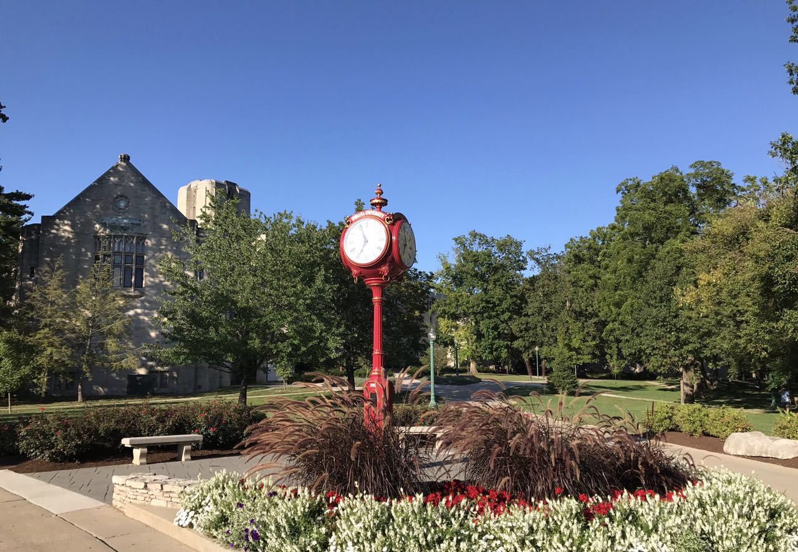

Hi, I'm Zhuohuang, I am currently a lecturer at Shenzhen Polytechnic University (School of Artificial Intelligence).
Prior to this, I was a senior researcher at Tencent.
I completed my Ph.D. in both Speech & Hearing Sciences and Computer Science at Indiana University Bloomington,
under the supervision of Prof. Yi Shen (SLHS, now at UW) and Prof. Donald Williamson (CS, now at OSU).
During my Ph.D. study, I worked on several projects on speech enhancement, speech assessment and human speech perception.
Our work on non-intrusive speech assessment was recognized as the outstanding student paper in ICASSP 2021. I have also previously interned at Microsoft Azure Cognitive Services (2021), Tencent AI Lab (2020) and DiDi Chuxing (2019).

Recent News
2023/09 Joining SZPT as a (tenure-track) lecturer.
2022/06 Two papers accepted to Interspeech 2022.
2022/05 Successfully defended my final dessertation.
2022/01 Our paper on neural beamforming for CSS got accepted to ICASSP 2022.
2021/11 Our MCMF ADL-MVDR paper got accepted to IEEE/ACM TASLP!
2021/08 Received Larry Humes Travel Award from IU SPHS department.
2021/06 So honoured to receive the ICASSP 2021 outstanding student paper award!
Selected Publications
Zhuohuang Zhang, Donald S. Williamson, Yi Shen. "Investigation on the Band Importance of Phase-aware Speech Enhancement".
Interspeech 2022, Incheon, South Korea. [pdf]
Zhuohuang Zhang, Yong Xu, Meng Yu, Shi-Xiong Zhang, Lianwu Chen, Donald S. Williamson, Dong Yu. (2021)
"Multi-channel Multi-frame ADL-MVDR for Target Speech Separation". IEEE/ACM Transactions on Audio, Speech, and Language Processing. [pdf]
Zhuohuang Zhang, Takuya Yoshioka, Naoyuki Kanda, Zhuo Chen, Xiaofei Wang, Dongmei Wang, Sefik Emre Eskimez.
"All-neural Beamformer for Continuous Speech Separation". ICASSP 2022, Singapore. [pdf]
Yong Xu, Zhuohuang Zhang, Meng Yu, Shi-Xiong Zhang, Dong Yu. "Generalized Spatio-Temporal RNN Beamformer for Target Speech Separation".
Interspeech 2021, Brno, Czech. [pdf]
Zhuohuang Zhang, Yong Xu, Meng Yu, Shi-Xiong Zhang, Lianwu Chen, Dong Yu. "ADL-MVDR: All Deep Learning MVDR Beamformer for Target Speech Separation".
ICASSP 2021, Toronto, Canada. [pdf]
Zhuohuang Zhang, Piyush Vyas, Xuan Dong, Donald S. Williamson. "An End-to-End Non-intrusive Model For Subjective and Objective Real-world Speech Assessment using a Multi-task Framework".
ICASSP 2021, Toronto, Canada. [outstanding student paper award], [pdf]
Zhuohuang Zhang, Donald S. Williamson, Yi Shen. (2020). "Investigation of Phase Distortion on Perceived Speech Quality for Hearing-impaired Listeners".
Interspeech 2020, Shanghai, China. [pdf]
Zhuohuang Zhang, Chengyun Deng, Yi Shen, Donald S. Williamson, Yongtao Sha, Yi Zhang, Hui Song and Xiangang Li (2020).
"On Loss Functions and Recurrency Training for GAN-based Speech Enhancement Systems". Interspeech 2020, Shanghai, China.
[pdf]
Zhuohuang Zhang, Yi Shen. (2019). "Listener Preference on the Local Criterion for Ideal Binary-Masked Speech".
Interspeech 2019, Graz, Austria. [pdf]
Research Experience
Graduate student working on multiple projects related to speech enhancement, speech assessment and human speech perception.
Research intern working on neural beamforming for continuous speech separation.
[All-neural Beamformer for CSS]
Research intern working on neural beamforming for target speech separation.
[ADL-MVDR] Demos
[MCMF ADL-MVDR] Demos
[Generalized neural beamformer] Demos
Research intern working on GAN-based speech enhancement.
[GAN-based speech enhancement]
Graduate student working on speaker diarization.
Professional Activities
Reviewer
IEEE/ACM Transactions on Audio, Speech, and Language Processing (TASLP)
European Association for Signal Processing (EURASIP) Journal on Audio, Speech, and Music Processing (JASM)
(EURASIP & ISCA) Speech Communication
Neural Networks
IEEE International Conference on Acoustics, Speech, and Signal Processing (ICASSP)
(ISCA) INTERSPEECH
IEEE Workshop on Applications of Signal Processing to Audio and Acoustics (WASPAA)
Organizing Committee
ConferencingSpeech 2022 Challenge (Interspeech)